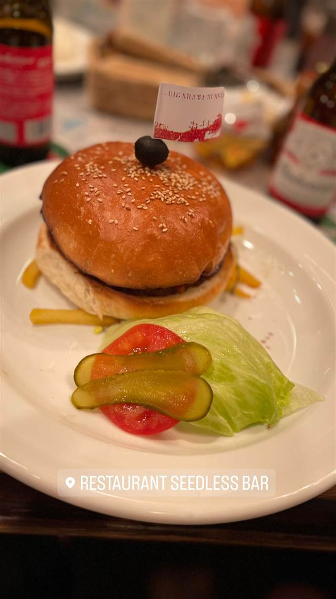

バー · バー · 由比ヶ浜
Seedless Bar(シードレスバー)
国産食材のハンバーガーとピザを海を眺めながら味わえる
RESTAURANT SEEDLESS BAR
由比ヶ浜の海を望む国道134号線沿いにあるアメリカンダイナー風のレストラン&バー。国産食材にこだわったハンバーガーやピザを、海を眺めながら味わえる。
TRIVIA
豆知識
- 雑誌「POPEYE」や「Olive」で紹介されたことがあるクラシックアメリカン調の店
REVIEWS
世間の評判
3.40食べログ
海を望む景色とボリューム料理
- 由比ヶ浜の海を目の前に望む窓際の景色をハンバーガーと合わせて楽しめると評価する声が多い
- タコスやハンバーガー、ピザはボリュームがあり食べ応えがあるという声が多い
- 春休みなどの繁忙期のランチタイムは30分ほど待つこともあるという声がある
食べログ 口コミ249件
| 看板 | ハンバーガー、ピザなどアメリカンスタイルの料理 |
|---|---|
| こだわり | 国産のこだわり食材を使用している |
| どこから | 東京から1時間ほど |
| 行くなら | 行列 |
| 営業時間 | 月〜金 11:00-22:00 土・日 10:00-22:00 |
| 予算 | 昼 ¥1,000～¥1,999 夜 ¥2,000～¥2,999 |
| 場所 | 由比ヶ浜駅/鎌倉駅 神奈川県鎌倉市由比ガ浜 |
| メモ | 由比ヶ浜海岸目の前、国道134号線沿い、犬同伴可、テラス・カウンター席あり |
食べたもの：ハンバーガー
NEARBY
近い店・同じ系統の店
-
 バー 六本木
RIGOLETTO BAR AND GRILL
名物バーガーはヒルズ主催コンテストで最多5回優勝の実力店
夜 ¥3,000～¥3,999
バー 六本木
RIGOLETTO BAR AND GRILL
名物バーガーはヒルズ主催コンテストで最多5回優勝の実力店
夜 ¥3,000～¥3,999
-
 バー 六本木
KAKIGORI CAFE&BAR yelo
年間200杯食べ歩くオーナーの店、朝5時まで味わえるかき氷
昼 ¥1,000～¥1,999 夜 ¥1,000～¥1,999
バー 六本木
KAKIGORI CAFE&BAR yelo
年間200杯食べ歩くオーナーの店、朝5時まで味わえるかき氷
昼 ¥1,000～¥1,999 夜 ¥1,000～¥1,999
-
 バー 恵比寿駅
BAR MARTHA
タンノイのオートグラフや年代物の真空管アンプでレコードを1曲ずつ鳴らす
夜 ¥2,000～¥2,999
バー 恵比寿駅
BAR MARTHA
タンノイのオートグラフや年代物の真空管アンプでレコードを1曲ずつ鳴らす
夜 ¥2,000～¥2,999
-
 バー 表参道
バルバッコア 青山本店
1994年に日本上陸したブラジル発シュラスコ15種食べ放題
昼 ¥6,000～¥7,999 夜 ¥8,000～¥9,999
バー 表参道
バルバッコア 青山本店
1994年に日本上陸したブラジル発シュラスコ15種食べ放題
昼 ¥6,000～¥7,999 夜 ¥8,000～¥9,999
-
 バー たまプラーザ
Troubadour（トルバドール）
1970年代LAの伝説的音楽クラブを再現した内装でルーベンサンド
昼 ¥1,000～¥1,999 夜 ¥4,000～¥4,999
バー たまプラーザ
Troubadour（トルバドール）
1970年代LAの伝説的音楽クラブを再現した内装でルーベンサンド
昼 ¥1,000～¥1,999 夜 ¥4,000～¥4,999
-
 バー 恵比寿
bin(ビン)
猟師直送のジビエで作る北海道産鹿肉のカルパッチョ
夜 ¥5,000～¥5,999
バー 恵比寿
bin(ビン)
猟師直送のジビエで作る北海道産鹿肉のカルパッチョ
夜 ¥5,000～¥5,999